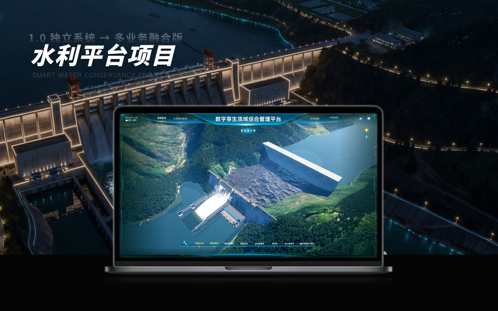
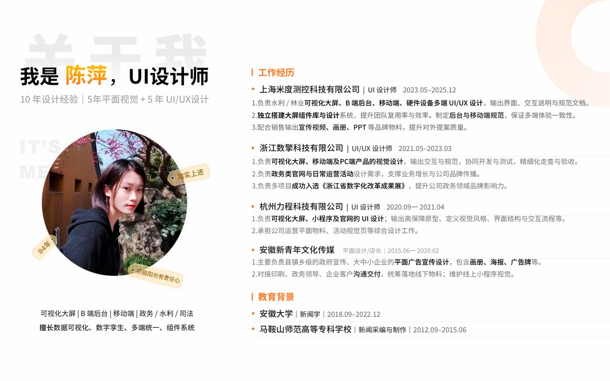
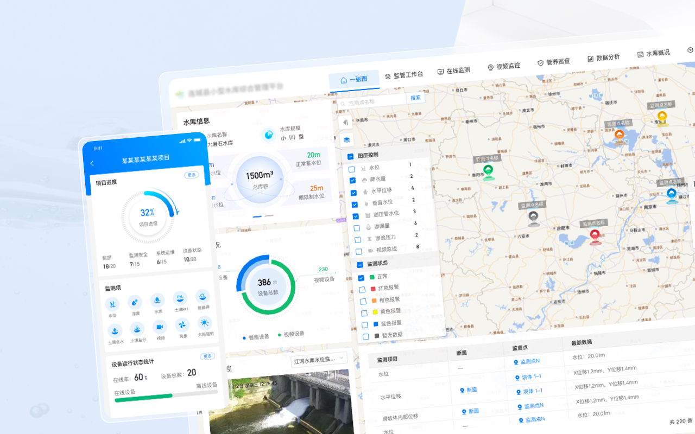
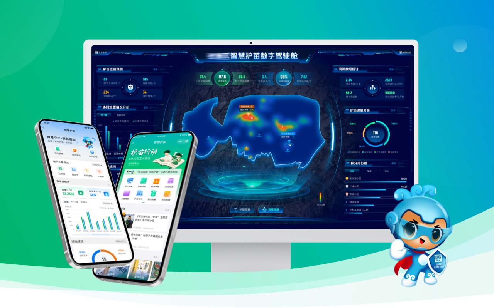
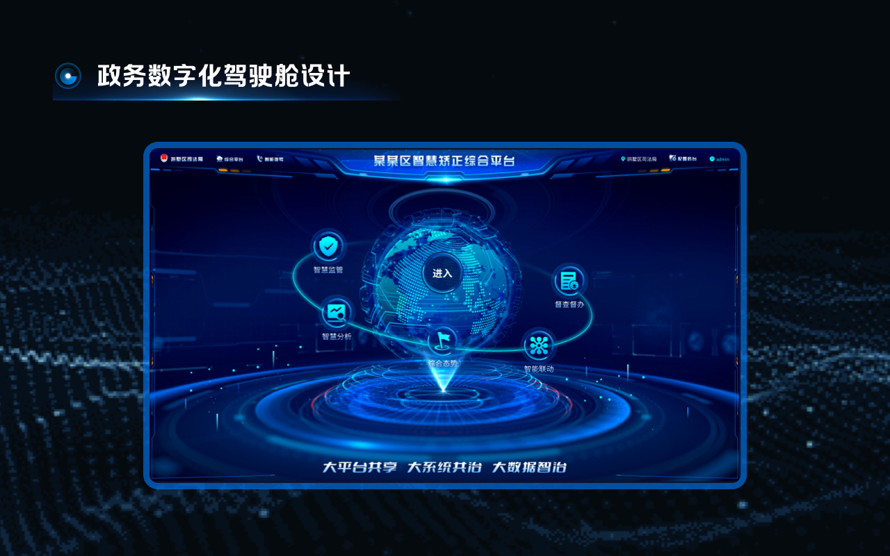
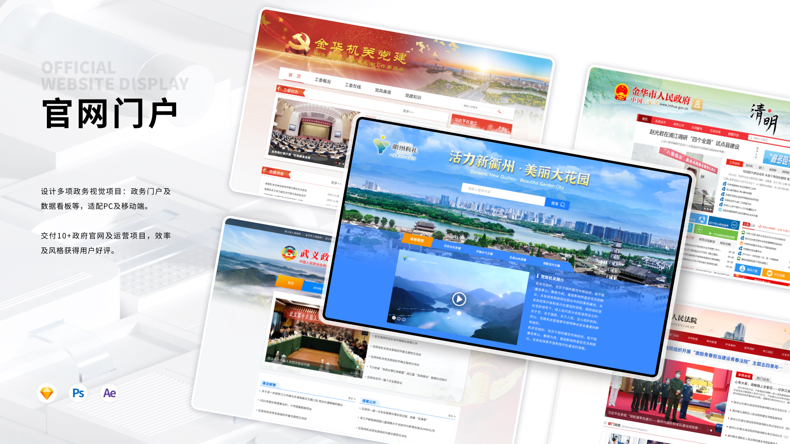
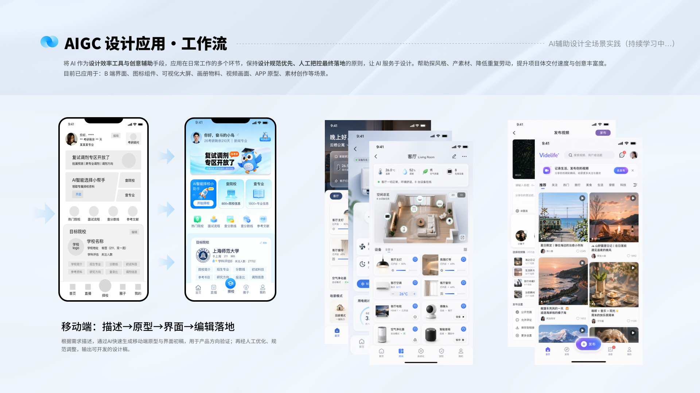
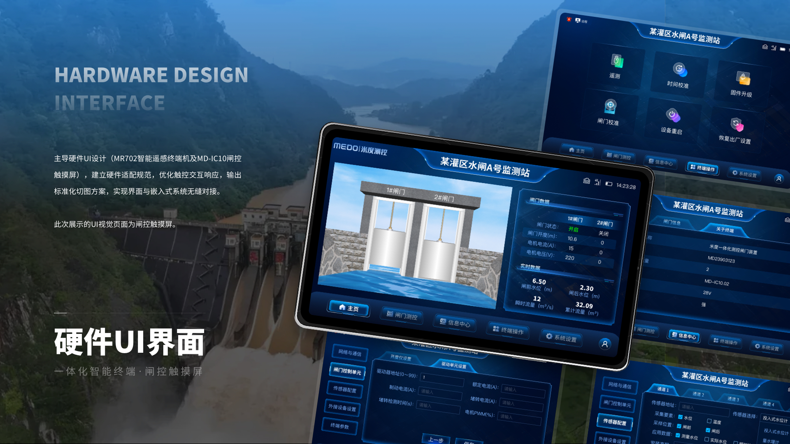

可视化大屏
某流域智慧水利数字孪生平台
整合流域总览、水库矩阵、防洪调度与兴利调度，完成复杂水利业务的数据分层、驾驶舱视觉体系与多端体验统一。
你好，我是
UI/UX 设计师
10年+设计经验，聚焦可视化大屏、B端系统、移动端、网站门户与硬件界面。 擅长复杂业务信息架构、设计系统搭建、组件库沉淀与高保真落地，也持续融合 AI 生图、动效和多媒体表达，帮助项目更快被看懂、被认可、被上线。
从复杂业务到多端体验，优先展示能体现结构能力、视觉落地和客户协同的代表项目。

整合流域总览、水库矩阵、防洪调度与兴利调度，完成复杂水利业务的数据分层、驾驶舱视觉体系与多端体验统一。

面向生态保护、灾害防控、设备运维与应急指挥，主导核心板块从 0 到 1 的信息架构、视觉风格与交互落地。

服务政府管理者、运维人员与巡查员，建立统一规范与模块化设计逻辑，提升页面复用和跨平台交付效率。

构建驾驶舱、移动端与 PC 端的多端差异化体验，覆盖街道、社区与家庭场景，支持政务应用高效上线。

围绕“行知去向、动知轨迹、违规警示”目标，梳理监管业务链路，输出权威、清晰、可展示的数据驾驶舱。

参与政府官网、农业科院、政协、司法等多类门户界面设计，兼顾公开信息传达、视觉规范与上线可用性。

融合 AI 生图、AE 动效、宣传视频、画册与 PPT 表达，支撑项目提案、对外传播与复杂方案可视化呈现。

负责智能遥感终端机、闸控触摸屏等硬件界面设计，关注现场操作效率、信息层级与软硬件体验一致性。
从平面到 UI/UX，从单点页面到多端产品体系，我更关注设计如何帮助复杂项目稳定落地。
水利、林业、数字孪生、大屏、B端、移动端与硬件界面设计。
智慧乡村、政务官网、司法、教育与数字化大屏项目。
小程序、官网、宣传物料、客户沟通与项目落地执行。
长期服务水利、林业、司法、教育、乡村治理等复杂业务，将专业数据转化为清晰可读的驾驶舱与管理界面。
覆盖需求评审、信息架构、交互设计、高保真视觉、标注走查、开发协同与上线验收。
可独立搭建大屏、B端与多端规范，沉淀颜色、布局、图表、组件与复用规则，提高团队交付效率。
融合 AI 生图、手绘、AE 动效、宣传视频、PPT 与品牌物料能力，让方案更容易被客户理解和采纳。
适合 UI/UX、可视化大屏、B端产品、多端设计规范、项目提案视觉与 AI 辅助设计相关机会。